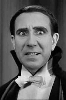

Country:Spain, 104 minutes
Spoken languages:
Genres:Horror
Director(s):Enrique Tovar Ávalos, George Melford
Writer(s):Bram Stoker
Video Codec:Unknown
Number: 1699


Certification:
Storyline:
At midnight on Walpurgis Night, an English clerk, Renfield, arrives at Count Dracula's castle in the Carpathian Mountains. After signing papers to take over a ruined abbey near London, Dracula drives Renfield mad and commands obedience. Renfield escorts the boxed count on a death ship to London. From there, the Count is introduced into the society of his neighbor, Dr. Seward, who runs an asylum. Dracula makes short work of family friend Lucia Weston, then begins his assault on Eva Seward, the doctor's daughter. A visiting expert in the occult, Van Helsing, recognizes Dracula for who he is, and there begins a battle for Eva's body and soul.
Cast: 


Medium: Original DVD,
Comments: Part of: Dracula - The Legacy Collection
Loaned: No
Aspect ratio: Unknown